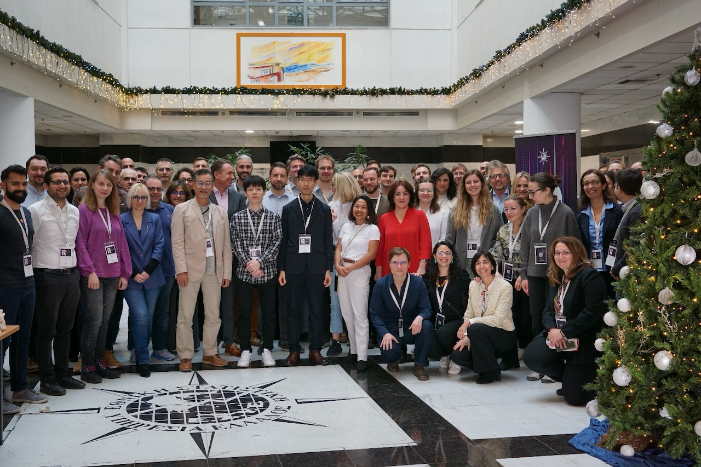

yHat
~/
~/blog
~/talks
~/projects
~/astronomy
Categories
Arrow
Carpentries
Docker
R
Shiny
useR

2024 uROS Conference
Shiny
Arrow
Visualising Large Datasets using Shiny & Arrow
Nov 27, 2024
Data Carpentry (Social Sciences with R)
R
Carpentries
1-day course on R
Nov 15, 2023
2023 Oman R Users
Arrow
Exploring large datasets using Apache Arrow
Nov 8, 2023
2022 useR Conference: Docker for R Workshop
R
Docker
useR
Workshop on Docker for R users
Jun 20, 2022
No matching items